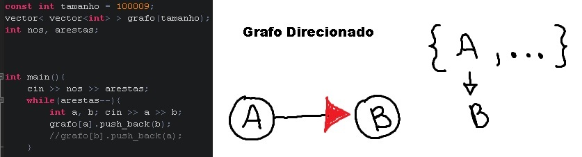
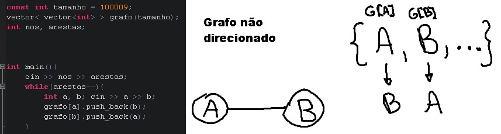

Busca em Profundidade - DFS
Busca em profundidade é um dos principais algoritmos de grafos.
O algoritmo encontra o primeiro caminho lexicográfico(wiki)(ou seja, na ordem que você fizer as ligações durante o código, de um vértice para o outro) no grafo a partir de um vértice(nó) fonte $u$ para cada outro vértice. Busca em profundidade também encontra os menores caminhos em uma árvore, porém, em grafos genéricos, este não é o caso.
O algoritmo funciona em tempo $O(m + n)$, onde $n$ é o número de vértices(nós) e $m$ é o número de arestas(ligações entre os nós).
Descrição
A idéia por trás da DFS é ir o mais fundo possível no grafo, e voltar atrás quando você estiver em um vértice sem vértices adjacentes(nós filhos) não visitados.
Nós começamos a procura em um vértice. Depois de visitar o vértice, nós executamos uma DFS para cada vértice adjacente(nós filhos) que não foram visitados antes. Nesse caminho nós visitamos todos os vértices que são alcançáveis pelo vértice inicial.
Aplicações
Encontrar qualquer caminho no grafo pelo vértice fonte $u$ para todos os vértices.
Encontrar o primeiro caminho lexicográfico no grafo por um vértice fonte $u$ para todos os vértices.
Checar se o vértice em uma árvore é um ancestral(nó parente) de algum outro vértice(nó filho):
No começo e fim de cada iteração da função de procura(dfs) nós guardamos o "tempo" de entrada e saída de cada vértice. Agora você pode encontrar a resposta para qualquer par de vértices $ (i, j) $ em $ O (1) $: vértice $i$ é um ancestral do vértice $j$, se os tempos $\text{entrada}[i] < \text{entrada}[j]$ e $\text{saída}[i] > \text{saída}[j]$.
Encontrar o menor ancestral comum de dois vértices.
Ordenação(sorting) Topológica(wiki):
Execute uma série de DFS's para poder visitar cada vértice exatamente uma vez em tempo $O(n + m)$. A ordem topológica será os vértices ordenados em ordem descendente de tempo de saída.
Checar se um grafo é acíclico ou encontrar ciclos em um grafo. (Como mencionado acima, contando as arestas anteriores(back edges) em todos os componentes conectados).
Encontre componentes fortemente conectados em um grafo direcionado:
Primeiro: fazer uma ordenação topológica do grafo. Então transponha o grafo e execute outra série de DFS's na ordem definida pela ordenação topológica. Para cada chamada da DFS o componente criado é um componente fortemente conectado.
Encontrar pontes em um grafo não direcionado:
Primeiro: converta o grafo em um grafo direcionado executando uma série de DFS's e fazendo cada aresta ser direcionada enquanto a DFS está sendo executada, na direção em que fomos. Segundo: encontre os componentes fortemente conectados nesse grafo direcionado. Pontes são as arestas em que suas pontas pertencem a diferentes componentes fortemente conectados.

Classificação das arestas de um grafo
Nós podemos classificar as arestas usando os tempos de entrada e saída dos nós finais $u$ e $v$ das arestas $(u,v)$.
Nós executamos uma DFS e classificamos as arestas encontradas usando as seguintes regras:
Se $v$ não foi visitado:
- Tree Edge - Se $v$ é visitado depois $u$ então a aresta $(u,v)$ é chamada de tree edge(aresta árvore). Em outras palavras, se $v$ é visitado pela primeira vez e $u$ está atualmente sendo visitado então $(u,v)$ é chamado de aresta árvore. Essas arestas formam uma árvore de DFS's e consequentemente o nome 'arestas árvores'.
Se $v$ é visitado antes que $u$:
Back edges(arestas anteriores) - Se $v$ é um ancestral(parente) de $u$, então a aresta $(u,v)$ é uma back edge. $v$ é um ancestral exatamente se nós já entramos em $v$, mas não saímos ainda. Back edges completam um ciclo assim que existe um caminho do ancestral $ v $ para o descendente $ u $ (na recursão da DFS) e uma aresta do descendente $u$ para o ancestral $v$ (back edge), portanto, um ciclo é formado. Ciclos podem ser detectados usando back edges(arestas anteriores).
Forward Edges(arestas posteriores) - Se $v$ é um descendente(filho) de $u$, então a aresta $(u, v)$ é uma aresta posterior. Em outras palavras, se nós ja visitamos e saímos de $v$ e $\text{entrada}[u] < \text{entrada}[v]$ então a aresta $(u,v)$ forma uma forward edge(aresta posterior).
- Cross Edges(arestas cruzantes): se $v$ não é nem um ancestral ou descendente de $u$, então a aresta $(u, v)$ é uma cross edge. Em outras palavras, se nós já visitamos e saímos de $v$ e $\text{entrada}[u] > \text{entrada}[v]$ então $(u,v)$ é uma cross edge.
Nota: Forward edges e cross edges apenas existem em grafos direcionados.
Implementação
vector<vector<int>> g; // grafo como lista de adjacência
int n; // número de vértices(nós)
vector<bool> vis; //vetor para marcar os visitados
void dfs(int v) {
vis[v] = true;
for (int u : g[v]) {
if (!vis[u])
dfs(u);
}
}
Esta é a implementação mais simples da Busca em Profundidade(dfs). Conforme descrito, pode ser útil também calcular os tempos de entrada e saída e a cor dos vértices. Vamos colorir todos os vértices com a cor 0, se não os tivermos visitado, com a cor 1 se os tivermos visitado, e com a cor 2, se já saímos do vértice.
Aqui está uma implementação genérica que adcionalmente programam os 'tempos' e 'cores':
vector<vector<int>> g; //grafo
int n; // número de vértices(nós)
vector<int> cor;
vector<int> time_in, time_out; //marca o preciso instante do nó(entrada e saída)
int dfs_timer = 0; //funciona como um relógio para a dfs
void dfs(int v) {
time_in[v] = dfs_timer++;
cor[v] = 1;
for (int u : adj[v])
if (cor[u] == 0)
dfs(u);
cor[v] = 2;
time_out[v] = dfs_timer++;
}
Problemas
- SPOJ: ABCPATH
- SPOJ: EAGLE1
- Codeforces: Kefa and Park
- Timus:Werewolf
- Timus:Penguin Avia
- Timus:Two Teams
- SPOJ - Ada and Island
- UVA 657 - The die is cast
- SPOJ - Sheep
- SPOJ - Path of the Rightenous Man
- SPOJ - Validate the Maze
- SPOJ - Ghosts having Fun
- Codeforces - Underground Lab
- DevSkills - Maze Tester
- DevSkills - Tourist
- Codeforces - Anton and Tree
- Codeforces - Transformation: From A to B
- Codeforces - One Way Reform
- Codeforces - Centroids
- Codeforces - Generate a String
- Codeforces - Broken Tree
- Codeforces - Dasha and Puzzle
- Codeforces - Making genome In Berland
- Codeforces - Road Improvement
- Codeforces - Garland
- Codeforces - Labeling Cities
- Codeforces - Send the Fool Futher!
- Codeforces - The tag Game
- Codeforces - Leha and Another game about graphs
- Codeforces - Shortest path problem
- Codeforces - Upgrading Tree
- Codeforces - From Y to Y
- Codeforces - Chemistry in Berland
- Codeforces - Wizards Tour
- Codeforces - Ring Road
- Codeforces - Mail Stamps
- Codeforces - Ant on the Tree
- SPOJ - Cactus
- SPOJ - Mixing Chemicals